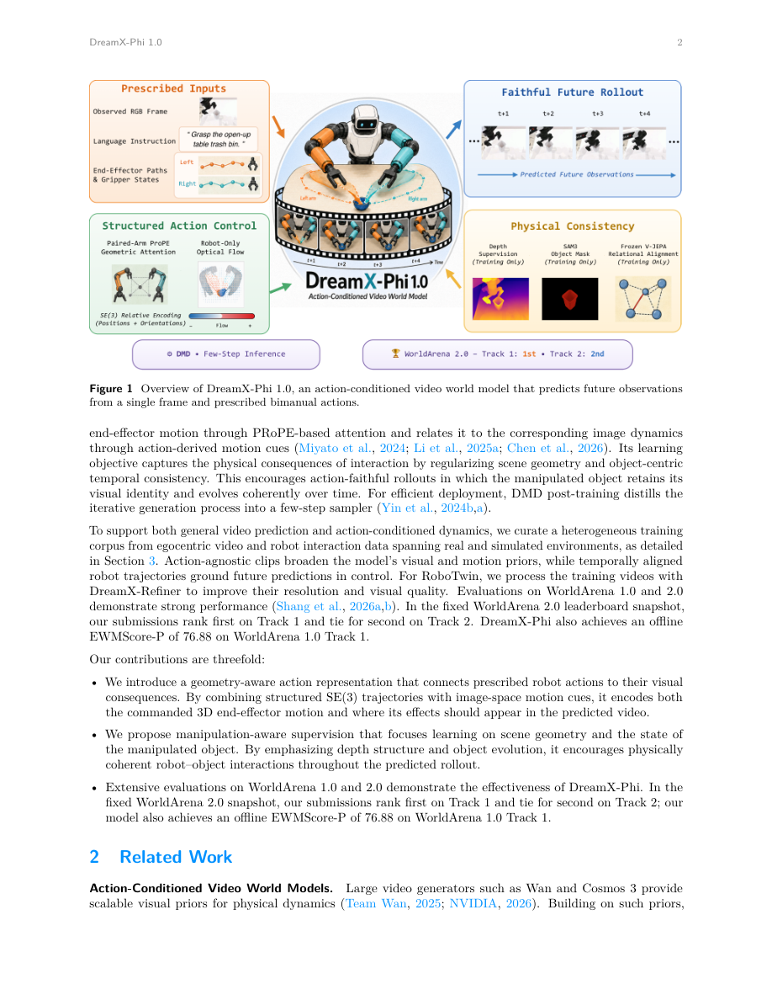

#1
★ 8/10
DreamX-Phi 1.0: Action-Conditioned Video World Model for Robotic Manipulation
DreamX-Phi 1.0：用于机器人操控的动作条件视频世界模型

图 Figure · Page 2 of paper
🎯 让机器人在"脑中演练"动作后，精准预测真实操控画面的世界模型
A video world model that predicts what a robot arm will see after executing a sequence of actions — with high fidelity and physical accuracy.
🗣️ 一句话比喻 · Plain-English Analogy就像飞行员用模拟器练习降落，不用冒险开真飞机一样——机器人可以先在一个"虚拟世界"里反复演练抓取动作，这个虚拟世界看起来和真实环境一模一样，练好了再去动真实物体。Think of it like a flight simulator for robot arms — instead of pilots practicing landings without risking a real plane, robots can "rehearse" picking up objects in a virtual world that looks and behaves exactly like reality, before ever touching anything physical.
| 维度 | 中文 | English |
|---|---|---|
| ❓ 待解决 的问题 |
训练机器人需要大量真实视频数据，成本高昂。研究人员希望用"世界模型"来预测机器人执行动作后摄像头会看到什么画面。但现有模型生成的视频虽然看起来逼真，却常常出错：比如搞错了哪只机械臂在动，或者夹住的物体在视频中途凭空消失。 | When training robots to manipulate objects, it's expensive and slow to collect real-world video data. AI researchers want to build "world models" — programs that can predict what a robot's camera would see after it performs a series of moves. The trouble is, existing models often produce realistic-looking but physically wrong videos: the wrong arm moves, or a grasped object suddenly disappears mid-clip. |
| 💡 解决 的亮点 |
- 用"PRoPE几何编码"将每条机械臂的三维位置和朝向注入模型的注意力机制，彻底解决"搞错机械臂"的问题。 - 引入轻量级深度分支，帮助模型理解整个场景的立体结构，而不只是表面颜色。 - 结合SAM3物体遮罩和V-JEPA教师模型，确保被夹持的小物体在整段视频中保持一致、不消失。 - 通过蒸馏技术将慢速多步生成器压缩为快速少步版本，满足实际部署需求。 | - PRoPE-style geometric encoding injects each arm's 3D position and orientation into the model's attention mechanism, so it always knows which arm is which and how it moves in space. - A lightweight depth branch helps the model understand the 3D structure of the whole scene, not just colors and textures. - SAM3 object masks + a frozen V-JEPA teacher keep small manipulated objects visually consistent throughout the video clip. - A distillation step compresses the slow multi-step generator into a fast few-step version for real-world deployment. |
| 🧪 实验 内容 |
该模型在WorldArena 2.0挑战赛上接受评测，这是专为机器人操控视频世界模型设计的公开基准测试。挑战赛分为两个赛道：赛道1聚焦单臂操控场景，赛道2涵盖更复杂的双臂或多物体场景。参赛系统在视频真实度、动作忠实度和物体一致性等指标上相互比较。 | The model was evaluated on the WorldArena 2.0 Challenge, a public benchmark specifically designed to test robotic manipulation video world models. The challenge contains two tracks: Track 1 focuses on single-arm manipulation scenarios, and Track 2 covers more complex bi-manual or multi-object settings. Competing systems are compared on video fidelity, action faithfulness, and object consistency metrics. |
| 📊 实验 结果 |
截至论文撰写时，DreamX-Phi 1.0在WorldArena 2.0挑战赛中取得赛道1第1名、赛道2第2名的成绩，是机器人操控世界模型领域的顶级公开榜单。摘要未披露具体数值，但两个赛道均跻身前2，证明其达到当前最优水平。 | At the time of writing, DreamX-Phi 1.0 achieves 1st place on Track 1 and 2nd place on Track 2 of the WorldArena 2.0 Challenge — the leading public benchmark for robotic manipulation world models. Specific numeric scores are not disclosed in the abstract, but the top-2 finish across both tracks demonstrates state-of-the-art performance in action-conditioned video prediction for robotics. |
| 🏁 结论 | DreamX-Phi 1.0证明了：将几何臂编码、场景深度感知和物体一致性监督结合起来，可以构建既逼真又物理正确的机器人操控世界模型，并在主流机器人基准测试中斩获第一或第二名。 | DreamX-Phi 1.0 proves that combining geometric arm encoding, depth-aware scene modeling, and object-consistency supervision yields a video world model that is both visually realistic and physically faithful — winning or placing top-2 on a major robotics benchmark. |
| 🔗 论文 链接 |
arXiv: 2608.13489v1 · 📥 PDF | |
⚙️ Method · 方法详解
DreamX-Phi 1.0 接受一帧观测画面、一条文字指令（如"拿起红色杯子"）和一系列规划好的机械臂姿态作为输入。它将每条机械臂的三维刚体变换（SE(3)位置+旋转）通过PRoPE风格的编码直接注入视频扩散模型的注意力层——就像给每条臂的每个动作打上精确的"GPS坐标"，模型再也不会搞混左右臂。与此同时，一个轻量深度分支帮助模型感知场景的立体结构。对于被夹持的小物体，SAM3分割遮罩逐帧追踪，并由V-JEPA特征教师模型提供一致性监督，防止物体"凭空消失"。最后，通过分布匹配蒸馏将慢速扩散模型压缩为更快的学生模型。
DreamX-Phi 1.0 starts with a single observed camera frame, a text instruction (e.g., "pick up the red cup"), and a sequence of planned arm poses. It encodes each arm's 3D rigid-body transformation (position + rotation in SE(3)) directly into the attention layers of a video diffusion model using PRoPE-style encoding — think of it like GPS coordinates stamped onto each arm's movement so the model never confuses left and right arms. A separate depth estimation branch runs alongside to give the model a sense of depth and 3D scene layout. For small objects being grasped, SAM3 segmentation masks are tracked through frames, and a V-JEPA feature teacher provides consistency supervision so the object doesn't "hallucinate" away. Finally, the slow diffusion model is distilled into a faster student model using distribution-matching, cutting inference time for deployment.
📐 Key Formulas · 关键公式
\[T \in \mathrm{SE}(3)\]
💡 SE(3)变换表示三维空间中的刚体运动，包含旋转和平移，用于精确描述每条机械臂的位置和朝向。
SE(3) transformation captures a rigid body's full 3D motion — both rotation and translation — used here to precisely encode each arm's pose in space.
🌟 Why It Matters · 为什么重要
能够精准模拟机器人动作的世界模型，可以大幅减少对昂贵真实机器人训练数据的依赖，加速家用和工业机器人的研发。本文在物体追踪和机械臂身份识别上的突破，是让机器人在行动前能在"脑中预演"任务的关键一步。
World models that accurately simulate robot actions could dramatically reduce the need for expensive real-world robot training data, speeding up the development of capable household and industrial robots. This paper's advances in keeping track of objects and arm identity are key steps toward robots that can reliably plan and practice tasks "in their heads" before acting.